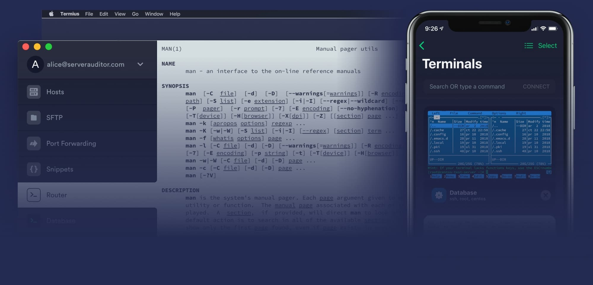
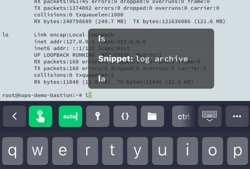
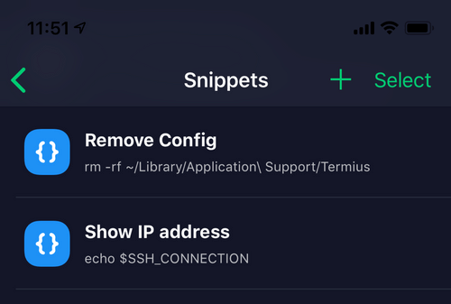
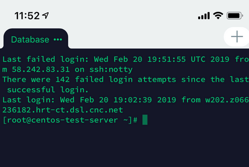
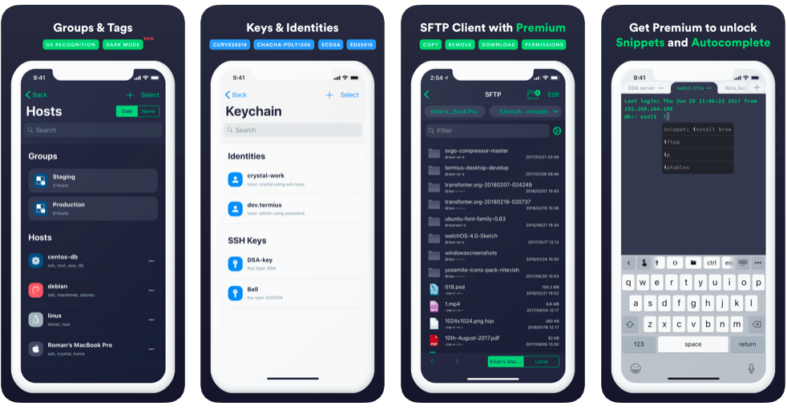
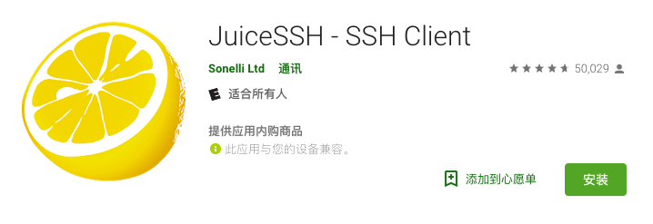

目前用过最好用的SSH iOS客户端；我在用的是 Termius iOS端，（有内购，99刀/年）；iOS 版本 Version 4.4.8 可以使用 Quantumult X 配合解锁/破解 本地PRO 功能；最爱的是自动补齐功能，常用命令无需全部输入。
[post cid="4182" cover="https://limbopro.xyz/usr/uploads/2019/10/3546260568.jpg"/]
本文隶属于 实用工具 分类，点击分类名称可以查看更多相关文章；

1.使用适用于macOS，Windows和Linux的现代SSH来组织，访问和连接到服务器；
2.使用功能最强大的SSH客户端（适用于iOS和Android）随时随地解决问题；
Termius 是一款跨平台的SSH客户端，支持macOS、Windows、Linux、iOS和Android；

Termius会从您所有服务器收集命令，并在您键入时提供建议。

可以将常用的shell命令添加为片段，并在多个主机上执行。

Termius完全支持Emacs和Vim，从而为iOS和Android提供最佳的终端体验。
使用集成的SFTP客户端上传和下载文件。 可从所有设备上的终端轻松访问。

*4.9，7,911 个评分
官网 https://termius.com/
iOS https://apps.apple.com/cn/app/termius-ssh-client/id549039908 有500MB+（真™大）
Mac https://apps.apple.com/cn/app/termius-ssh-client/id1176074088?mt=12
与SSH 客户端相关推荐：https://limbopro.xyz/tag/SSH/ ；
1.关注频道 https://t.me/limboprossr 不失联；
2.毒奶粉们（我管我的Fans）可联系 TG机器人 或发送 邮件获取帮助；
3.或点击本页面右下角的聊天按钮联系；
FinalShell是一体化的的服务器，网络管理软件，不仅是ssh客户端，还是功能强大的开发，运维工具，充分满足开发，运维需求！
已经在用的，可能是最好用的iOS（苹果手机） SSH 客户端。推荐使用 Termius；
与SSH 客户端相关推荐：https://limbopro.xyz/tag/SSH/ ；
iShell 来自 Shenzhen future precision medicine biological industry co. LTD
https://itunes.apple.com/cn/app/ishell/id1455946930?mt=8
它现在在市场了还没有评测，但真心推荐大家用用看，vi/nano 指令体验很差，无法实现翻页，上下查看。
销售商 Shenzhen future precision medicine biological industry co. LTD
大小 33.7 MB
类別 工具
兼容性
需要 iOS 10.0 或更高版本。
年龄分级 限4岁以上
Copyright © 2019 iShell™
价格 免费
这可能是我用过的最好用的SSH安卓客户端。

或应用商店搜索：JuiceSSH；
与SSH 客户端相关推荐：https://limbopro.xyz/tag/SSH/ ；
]]>